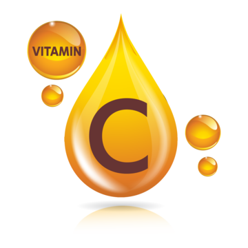
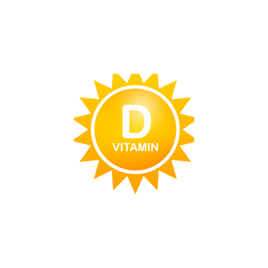
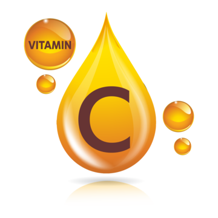
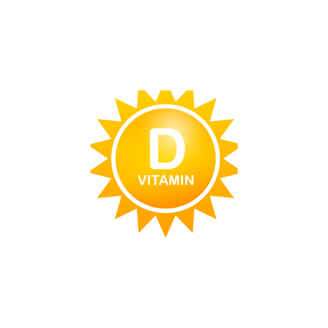
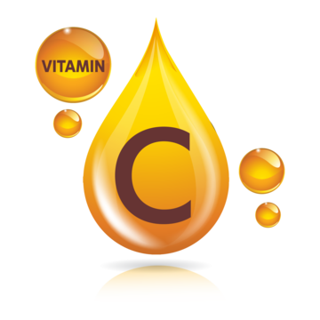
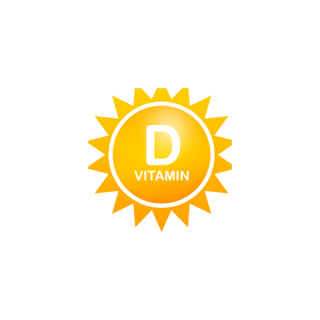
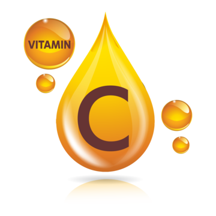
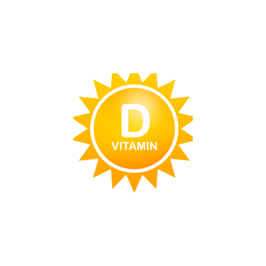

 



Növekedés, szürkületi látás, a szaruhártya egészsége, fertőzéssel szembeni ellenállás. Hiánya fejlődési zavarokat, farkasvakságot, a bőr szárazságát okozza. Forrásai: tejtermékek, halmájolajak, tojássárgája. A sárgarépában és zöldségfélékben található karotint a szervezet A-vitaminná alakítja.
Szénhidrát anyagcsere: az idegrendszer működése. Hiánya vizenyősödést vagy végzetes fogyással járó beriberit okoz. Forrásai: élesztő, tojássárgája, máj, búzacsíra, borsó, bab.
Szövetlégzés. Hiánya a nyelv és az ajak gyulladását okozza. Forrásai: élesztő, élesztő- és húskivonatok, tej, máj, sajt, tojás, zöldségfélék.
vérképződés. Hiánya vészes vérzékeny¬séget okoz. Forrásai: élesztő, hús, máj, vese, tej, sajt, tojás, zöldségfélék.
energiatermelés, anyagcserefolya¬matok, fertőzéssel szembeni ellenállás. Hiánya skorbutot , vérzékenységet, fáradékonyságot okoz. Forrásai: paprika, citrom, zöldségek, gyümölcsök.
csontok egészséges fejlődése. Hiánya a csontok görbülését, törékenységét, csontlágyulást okoz. Forrásai: vaj, halmájolaj. A növényi olajokban található előanyagot a szervezet alakítja D-vitaminná napsugárzás hatására.
az idegrendszer, az izomzat és a here normális működéséhez illetve a terhesség ki¬hordásához fontos. Hiánya nem jellemző. Forrásai: növényi magvak és olajok, saláták, zöldfőzelékek, tej, vaj.
megfelelő májműködés. Hiánya nem jellemző.
bélbaktériumok termelik, külső bevitele általában nem szükséges.